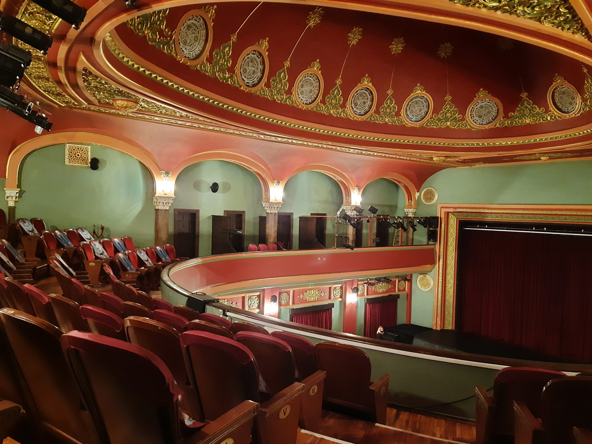

Ankara kültür ve sanat etkinlikleri ile öne çıkan şehirlerimizden biridir. Devlet tiyatroları, operalar, baleler, Cumhurbaşkanlığı Senfoni Orkestrası’nın konserleri, sergiler ile Ankaralılar tarafından sonbahardan yaza kadar olan zaman dilimi sanat açısından çok bereketli geçmektedir. Bu etkinliklere o kadar çok talep vardır ki bilet almak için zamanlayıcı kurulur ve satışa çıktığı andan itibaren on dakika içinde tükenecek olan bu biletleri alabilmek için zamanla yarışılır.
Ankaralılar olarak hepimizin çok sevdiği tiyatro oyunlarının temsil edildiği tiyatro sahnelerini tanıtacağımız bu yazımızda Ankara’da devlet tiyatrolarının yeni yeni başladığı yıllara gidip güzel hikâyeler yakalama fırsatımız olacak.
Ankara Devlet Tiyatroları’nın Tarihçesi
Küçük Tiyatro
Mimar Kemaleddin tarafından yapılan ve devlet memurlarının yaşayacağı uygun bir lojman görevi görecek olan II. Evkaf Apartmanı 1930 yılında tamamlanır ve görevine başlar. 1937 yılında Ankara Üniversitesi’nde konservatuvar bölümü açılır ve ilk mezunları dönemin şartları yüzünden kendilerine ait bir sahneye sahip olamamıştır. 1947 yılında ise bu apartmanın alt katı “tatbikat sahnesi” adıyla devlet tiyatrosu olarak göreve başlamasıyla, resmi bir devlet tiyatrosu sahnesine kavuşulur. Tatbikat sahnesinin yönetiminde bulunan Muhsin Ertuğrul’un ve konservatuvar mezunu sanatçıların büyük emeği ile kurulan Küçük Tiyatro hala Ankara’da oyunlara ev sahipliği yapmaktadır. Yüksek kubbeli salonu ve mimarisi ile sanatseverlerin ilgisini çeken ve Ankara’nın Ulus semtinde yer alan Küçük Tiyatro’da mutlaka bir oyun izlemenizi tavsiye ederiz.
Büyük Tiyatro
Büyük Tiyatro, Ankara Opera Salonu’nda, devlet tiyatrosu oyunlarının sergilendiği bir sahnedir. Ankara Opera Salonu, tiyatro oyunları haricinde Ankara Devlet Opera ve Balesi’nin temsillerine de yer verir. 1934 yılında sergi binası olarak hizmete açılan binada ilk kez beş yıllık sanayi kalkınma planını kutlayan bir sergiye yer verildi. Bu sergiye on binlerce insan katıldı. Devamında da bina yeni cumhuriyetin hizmetlerini gösteren sergilerle, Kemalist düşüncenin mimari bir simgesi haline geldi. Milli Eğitim Bakanlığı’nın isteği ile yapılan düzenlemelerden sonra, 1948 yılında opera binası olarak yeniden halk ile buluştu. Binanın opera salonu haline dönüştürülmesi esnasında mimarisinin İkinci Ulusal Mimarlık Akımı üslubuna uygun hale getirilmesi, binanın ilk tasarımcısı olan Mimar Şevki Balmumcu’yu çok üzmüştür ve mesleğini bırakmasına sebep olmuştur. Balmumcu, eserinin ondan habersiz bir şekilde restore edilmesi karşısında yaşadığı kırgınlık ile mesleğini bıraktıktan sonra başka işlerde de tutunamamış ve fakirlik içinde yaşamıştır, akıl sağlığını da kaybeden mimar bir süre akıl hastanesinde yatmıştır. Bir sanatçının, eserine karşı hassasiyetinin hiç de hafife alınmaması gerektiğini anladığımız bu üzücü hikaye, binanın yeni şekli ile opera binası olarak yükselmiş olmasının yanında ufak bir anı olarak yer almaktadır. Büyük Tiyatro, opera binasının içerisinde hala tiyatro oyunlarının sergilendiği bir sahnedir. Tıpkı Küçük Tiyatro gibi burası da mimarisinin ve tarihinin yarattığı nostaljik havasıyla sanatseverlere tam bir doyum yaratmaktadır.
Ankara Devlet Tiyatro Etkinlikleri
Ankara Devlet Tiyatrosu’nun şehrin dört bir yanına dağılmış olduğunu söylersek abartmış olmayız; 16 sahnesi ile Ankara’nın farklı noktalarında tiyatroseverlerle buluşmaktadır. Bu yıl Pursaklar’a yeni bir sahne açılmıştır ki Ankaralılar Pursaklar’ın merkeze uzaklığını iyi bilir. Kolay bir ulaşım, zengin bir program ve her bütçeye uygun bilet fiyatları ile isterseniz hafta içi iş ve okul çıkış saatinize göre akşamları isterseniz de hafta sonu gün içinde ve akşam saatlerinde rahatça bir tiyatro oyununa gidebilirsiniz. Daha önce hiç gitmediyseniz, artık bu bilgiler ışığında mutlaka gitmeniz gerekiyor ki tiyatronun yaşamınızı daha kaliteli kılan tadını bir an önce alın. William Shakespeare'in de dediği gibi ''Dünya büyük bir tiyatro sahnesi gibidir, Herkes bu sahnede rolünü oynar, rolü bitince de bu sahneyi terkeder.'' Tek yapmanız gereken size en yakın tiyatro sahnesini bularak internet üzerinden bir bilet almak. İyi seyirler.